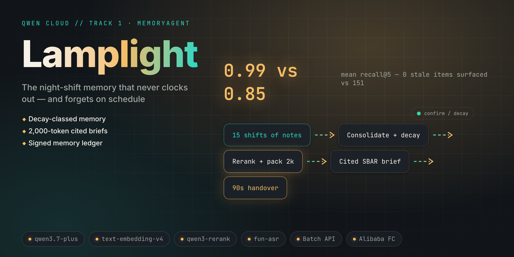

The night-shift memory that never clocks out. A cross-shift clinical memory agent that decays, forgets on purpose, and cites every claim.
Track 1 · MemoryAgent● offline · zero keysEdy Cu · solo
$ lamplight demo building ward… 6 patients × 15 shifts ✓ brief · Bed 9 · shift 15 · 334 / 2,000 tok ✓ chain verified · every card cited ✕ IV site left forearm slightly red (resolved s2)
02 · The hook
Six minutes of handover.
Fourteen patients.
At 3 AM it's anaphylaxis.
The sentence that mattered — "the rash started four hours after the new antibiotic" — never survives shift change.
03 · The problem
"Faint erythema across the right forearm… possibly related to the antibiotic." — written once, shift 6 of 15, in a phrasing no one will search for
04 · The solution
Lamplight ingests every shift's notes into per-patient episodic memory, consolidates and decays nightly, and briefs the incoming nurse in a hard 2,000-token budget — every item citing its source episode.

05 · How it works
06 · Live demo — real output, replayed byte-identically
$ lamplight demo HANDOVER BRIEF · Bed 9 · for shift 15 · budget 334/2,000 tok 3 #1 CRITICAL cefazolin — thread across 3 notes 1 [s04] 1 g IV q8h started for cellulitis; tolerated [s06] faint erythema right forearm — new, ?antibiotic [s12] red patches again at 0400; "is it a rash?" why tonight: next dose due 0200 — confirm before hung #2 routine oral switch planned if bloods hold [s14] RETIRED — never cited again 2 IV site left forearm slightly red — watching (resolved s2) ✓ chain verified · 458 tests · replay byte-identical 4
The stitched thread. Erythema / red patches / rash — three phrasings, shifts 4→6→12, consolidated into one critical card, each source cited.
The strikethrough. The resolved IV-site concern is retired — deliberately absent from the brief and mechanically impossible to cite.
The budget meter. 334 of 2,000 tokens — a hard invariant (I3), never exceeded across all 78 benched briefs.
The proof. Signed op-chain verifies; verify_offline.py replays it all with the network off.
07 · What's under the lamp
Critical never decays until resolved + confirmed; condition λ = 72 h; routine λ = one shift. Sub-0.05 strength is swept by a signed expire op.
strength(t) = s₀ · 2^(−Δt/λ)
Value = rerank × decay × criticality, greedy-packed into 2,000 tokens — and it logs what it left out, and why. (I3)
Uncited cards, or cards citing resolved/expired episodes, are rejected — never patched. (I1–I2)
Write, consolidate, decay, contradict, expire — each a signed chain entry. "Who knew what, when — and when the system forgot" is a signed fact; a 1-byte tamper fails verify-chain. (I4)
Rebuild the 15-shift ward from fixtures and byte-compare the hero brief — under a socket guard where any network call raises. (I5)
lamplight-memory has nothing clinical inside — the repo rebuilds it as an on-call support handover in ~15 lines.
08 · Why now · why Qwen Cloud
| Qwen surface | Role in Lamplight | Without it |
|---|---|---|
| qwen3.7-plus | episode extraction + SBAR prose | flash-tier negation errors ("no rash" → rash) are clinical poison |
| text-embedding-v4 + qwen3-rerank | two-stage retrieval: recall@40 cheap, precision@5 where it counts | single-stage retrieval is the 0.85 baseline we beat |
| structured output + function calling | Episode/BriefCard schemas · typed, signed memory ops | nothing mechanical to validate; forgetting as cron, not auditable transitions |
| fun-asr · Batch −50% | diarized voice handover · nightly consolidation economics | unattributed memories can't be audited; $/patient-day doubles |
Disclosed: this offline build runs the deterministic FakeQwen transport — the LiveQwen path (transport/live.py) exists behind DASHSCOPE_API_KEY and is not exercised here.
09 · Shipped — facts only
458 tests · 100% src coverage
full suite ~45 s, entirely offline
0.99 vs 0.85 recall@5
committed bench vs naive RAG, same embeddings — floors fail the build on regression
0 vs 151 resurfacings
forgetting precision 1.0 across 78 briefs
10 · The ask
$ git clone https://github.com/edycutjong/lamplight
$ python scripts/verify_offline.py # network off → OFFLINE VERIFY PASS
$ lamplight demo # the strikethrough, live
Judge it as Track 1 asks: storage, forgetting, recall in a limited window — then flip one byte and watch the chain catch you.
lamplight.edycu.dev
github.com/edycutjong/lamplight
Track 1 · MemoryAgent · MIT · Edy Cu
Global AI Hackathon with Qwen Cloud